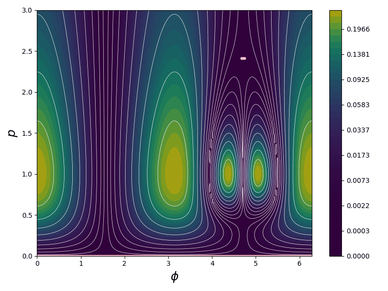
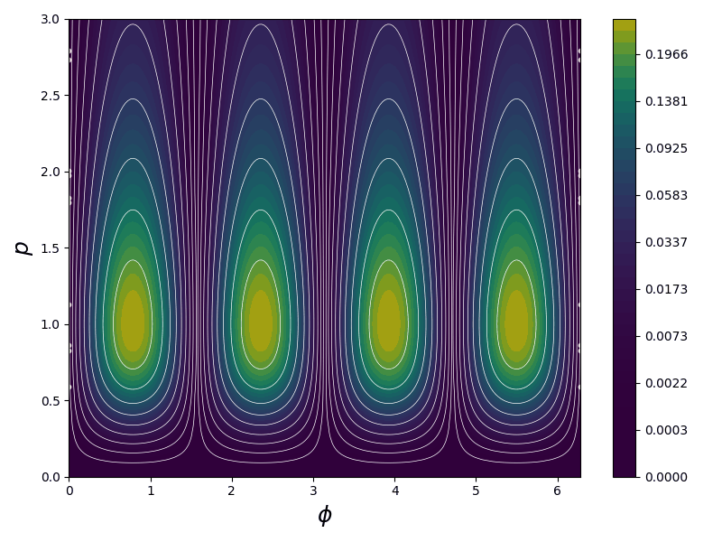

Material suplementario
Evolución temporal de \(UR(\sigma_x,\sigma_y)\)
Este material suplementario presenta los gráficos de contorno y mapas de color de \(UR(\sigma_x,\sigma_y)\) en el plano \((\phi,p)\) correspondientes al estado evolucionado temporalmente.
\(UR(\sigma_x,\sigma_y)\) en el plano \((\phi,p)\) correspondiente al estado evolucionado temporalmente en la fase de simetría exacta.
Animación de líneas de contorno

\(UR(\sigma_x,\sigma_y)\) en el plano \((\phi,p)\) correspondiente al estado evolucionado temporalmente en la fase de simetría rota.
Animación de líneas de contorno

\(UR(\sigma_x,\sigma_y)\) en el plano \((\phi,p)\) correspondiente al estado evolucionado temporalmente en el punto excepcional \(\eta = 1\).
Animación de líneas de contorno

\(UR(\sigma_x,\sigma_y)\) en el plano \((\phi,p)\) correspondiente al estado evolucionado temporalmente en el punto excepcional \(\eta = -1\).
Animación de líneas de contorno

Este material suplementario está relacionado con el manuscrito en preparación “Uncertainty inequalities in a non-Hermitian scenario: the problem of the metric”, por Yanet Alvarez, Mariela Portesi, Romina Ramirez y Marta Reboiro.